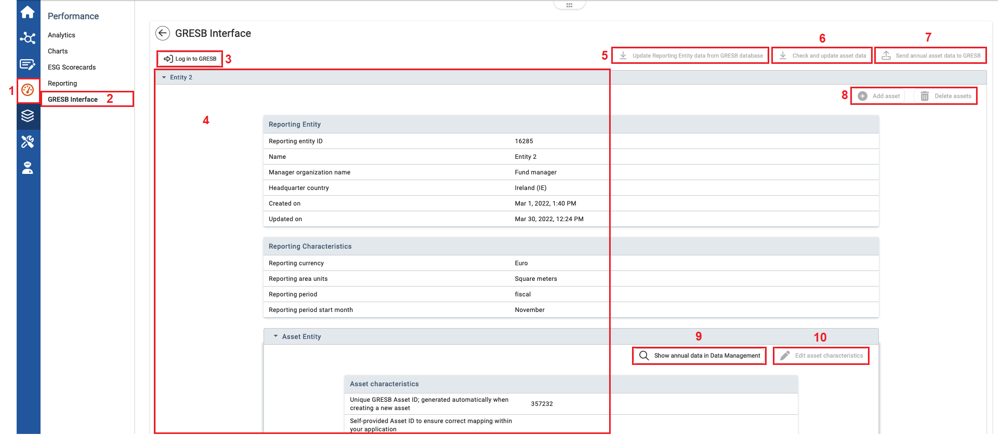

Note This module is an optional add-on module available in the ESG solution only.
The GRESB Interface module facilitates the collection of real estate ESG data, such as energy consumption, greenhouse gas emissions and tenant and community engagement. A direct connection with the GRESB portal allows historical data to be downloaded from the GRESB database, and then when you have finished capturing assets and their characteristics, upload the data directly into the GRESB database for yearly assessment. Using this module allows you to make use of standard WeSustain functionality to distribute tasks, set reminders, and use approval workflows.

| 1 | On the left navigational panel, click Performance. |
| 2 | Click GRESB Interface. The GRESB Interface window opens. |
| 3 | If not already connected to GRESB, you will see a link to login in to GRESB here. |
| 4 | The work area will display the reporting entities, their assets, and characteristics fields where you will enter data. |
| 5 | At initial setup, or if reporting entities have been added or changed in the GRESB portal, you can Update Reporting Entity data from GRESB database. This will provide your starting point reporting entities data. |
| 6 | Optionally you may click Check and update asset data to also download the asset data as it exists in the GRESB database. This should typically only be done on initial setup; this data should normally be created and updated in the WeSustain GRESB Interface. |
| 7 | When all annual data has been collected, click this button to Send annual asset data to GRESB for assessment. |
| 8 | Use these buttons to add or delete an asset from a reporting entity. |
| 9 | Use this button to go to the GRESB KPIs for the displayed asset in the Data Management module. |
| 10 | Use this button to edit the characteristics for the displayed asset. |